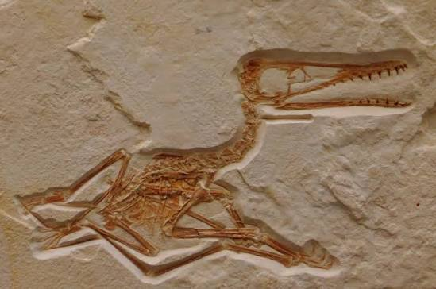

![original_logo[DinoSpace]](img/hop.png)


Fossilisation is the process of how living organisms are preserved in sedimentary rock over millions of years. Fossilisation is a rare occurrence and requires very specific conditions to occur, which is why fossils are so rare to find. Fossils can be used by palaeontologists to learn about the past and how life on earth has changed over time.
There are several ways a living thing can become a fossil, and each one tells a different story. The most common type is permineralisation, where minerals from groundwater seep into the pores of bones or shells and harden, turning them into stone. Another type is carbonisation, where extreme pressure squeezes out a ll the liquids and gases from an organism, leaving behind only a thin film of carbon—this is how many plant fossils and delicate creatures like insects are preserved. Moulds and casts form when a buried creature dissolves away completely, leaving an empty space (a mould) that later fills with sediment to create a rock copy (a cast). For something truly rare, amber preserves whole insects, feathers, or even small lizards in sticky tree resin that hardens into golden gemstone.
The Quetzalcoatlus fossils found in Texas were preserved through permineralisation, the most common type of fossilisation. Over millions of years, mineral-rich groundwater seeped into the porous spaces of the bones and crystallised, turning them solid as stone while keeping their original shape. Because the bones were hollow and lightweight which was most optimsied for flight, they were fragile, so only fragments survived. The fossils were found in sedimentary rock layers that were once ancient river channels and floodplains, suggesting Quetzalcoatlus lived and died near waterways. These were important clues to the Quetzalcoatlus Northropi's daily life style as many scientists suspected wether the giant Pterosaur was able to travel long distances.



How do fossils form and what can they tell us about prehistoric life? Visit this page to learn more about fossilisation and how bone turns to stone over time.
Learn More
Easily one of the greatest beings of the prehistoric era, learn more about the amazing Quezlacoatlus Northropi and how it lived in our world!.
Learn More
Learn about the fascinating story behind the Quezlacoatlus Northropi's discovery and what it reveals about prehistoric life, and how it changed our understanding of the prehistoric world.
Learn More
Discover the diverse world of pterosaurs, including the mighty Quezlacoatlus Northropi and other incredible species that ruled the skies during the prehistoric era.
Learn More